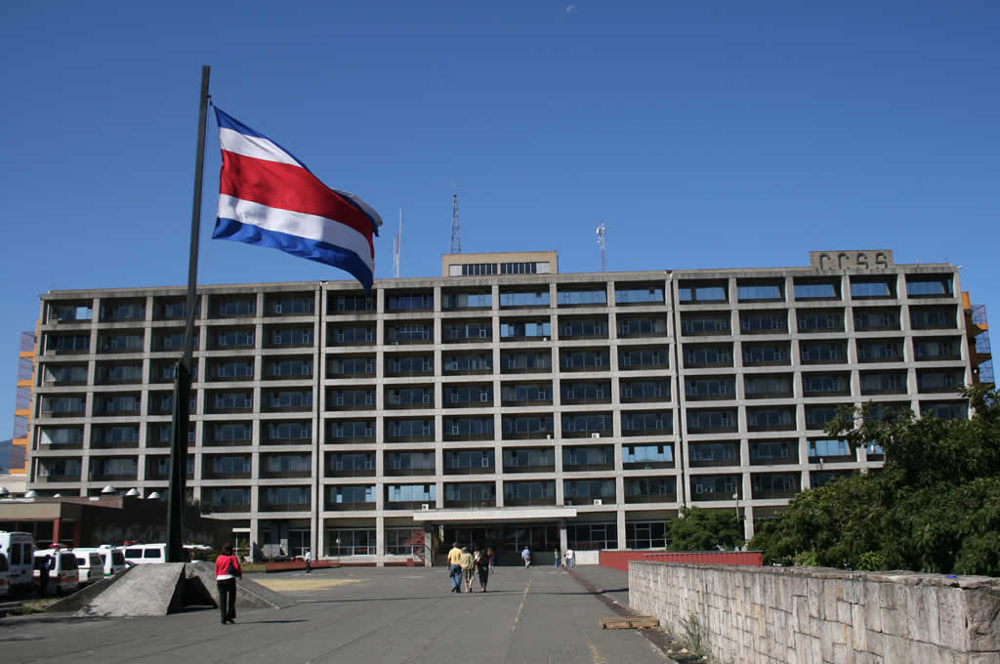
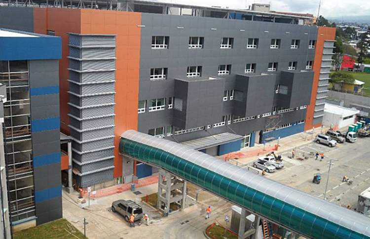
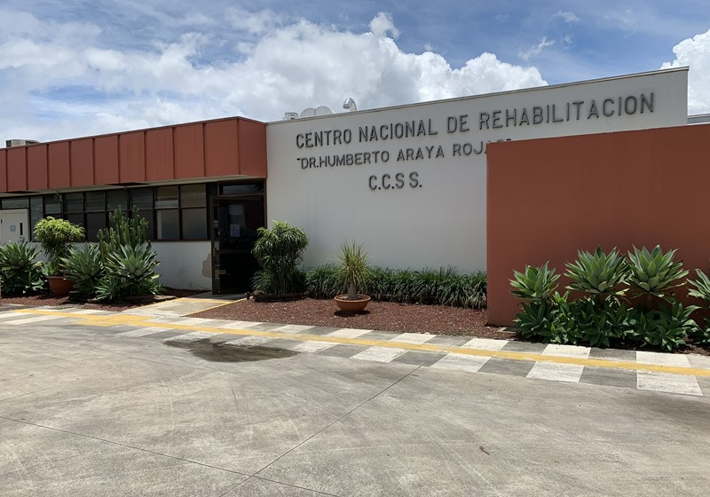

Para conocer la distribución de los barrios, servicios públicos y comunales del distrito puede consultar el siguiente mapa:
Fuente: Municipalidad de San José, 2021.
Inversión pública
En el distrito de Uruca se localizan algunos de los principales hospitales de la ciudad de San José, entre ellos el Hospital México.
Hospital México:
Debido a la pandemina que enfrenta el país en relación al virus del COVID-19, este hospital ha sido intervenido por la Caja Costarricense del Seguro Social (CCSS), habilitando de forma acelerada la nueva torre que forma parte del complejo hospitalario.

Fuente: Tomado de Internet, 2021.
Hospital del Trauma:
Otro hospital de vital importancia para el país ubicado en el distrito de la Uruca es el Hospital del Trauma el cual es parte de los servicios que brinda el Instituto Nacional de Seguros (INS), acá se atienden pacientes que presentan algún tipo de trauma producto de un accidente y que cuentan con una póliza expedida por el INS.

Fuente: Tomado de Internet, 2021.
Centro Nacional de Rehabilitación:
El Centro Nacional de Rehabilitación (CEACO) se une a la lista de centros de atención hospitalaria de la Caja Costarricense del Seguro Social (CCSS), este centro actualmente funciona como hospital con atención de pacientes con COVID-19 que requieren cuidados de una Unidad de Ciudados Intensivos (UCI).

Fuente: Tomado de Internet, 2021.
Todos estos centros hospitalarios para comodidad de los usuarios se localizan en el mismo sector, tal y como se puede apreciar en la siguiente imagen:

Fuente: Tomado de Google Maps, 2021.